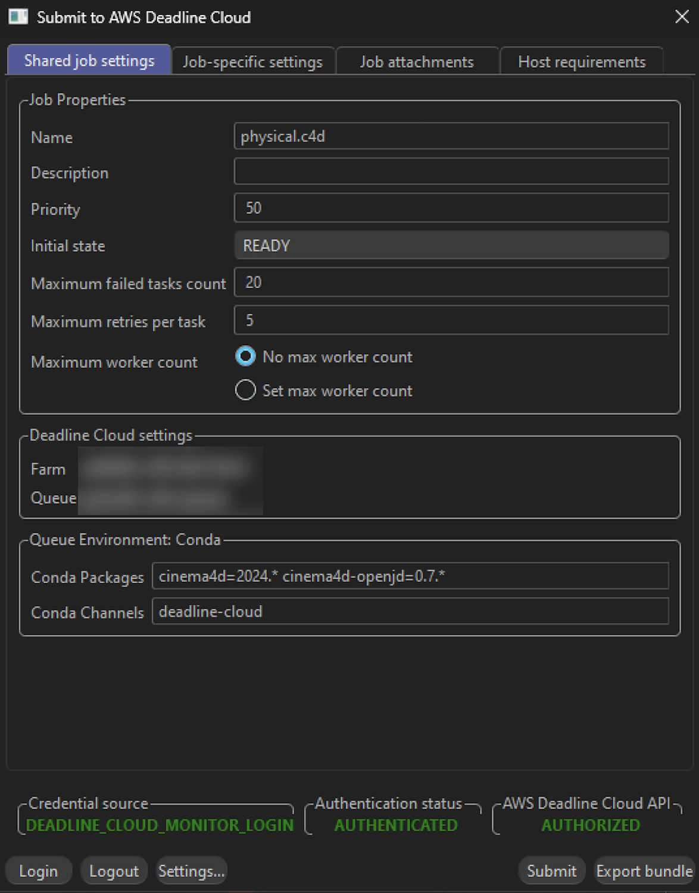
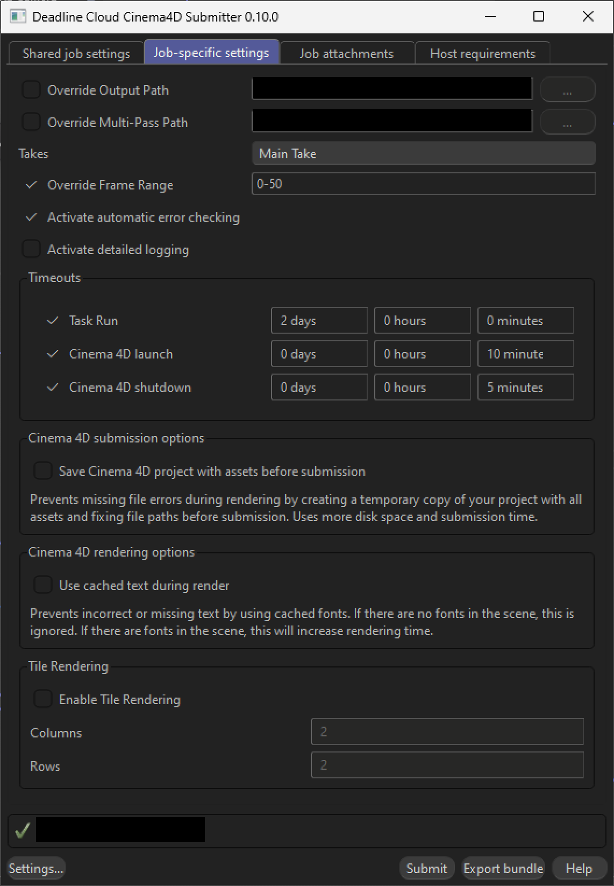

What the Submitter Can Do¶
The Cinema 4D submitter transforms your rendering workflow with powerful automation and intelligent features.
Key Benefits¶
🎯 Smart Asset Detection 🎯¶
Automatically finds and includes all textures, models, and other files your scene needs. No more missing asset errors or manual file hunting.
⚙️ Advanced Settings ⚙️¶
Provides additional configuration options beyond basic settings, allowing you to customize output paths, frame ranges, takes, and error checking to fit your workflow.
Interface Walkthrough¶
The submitter interface has several tabs to configure your job.
Shared Job Settings¶
Settings that apply to the entire job:
- Farm Selection - Choose which farm your job will render on
- Queue Selection - Select the specific queue within your chosen farm
- Job Name - Give your render job a descriptive name
- Job Description - Add optional details about your render job
- Priority - Set job priority for queue management
- Initial State - Control whether the job starts immediately or remains paused
- Max Failed Tasks Count - Maximum number of tasks that can fail before the job is marked as failed
- Max Retries Per Task - Number of times a failed task will be retried
- Max Worker Count - Maximum number of workers that can work on this job simultaneously
- Conda Packages - Specify additional conda packages required for your render
- Conda Channels - Define custom conda channels for package installation

Job-Specific Settings¶
Settings specific to your Cinema 4D render:
- Override Output Path - Override the main render output path from your scene settings
- Override Multipass Path - Override the multipass output path for additional render passes
- Takes - Select which Cinema 4D takes to render
- Override Frame Range - Override the frame range from your scene settings
- Automatic Error Checking - Optional checkbox to activate/deactivate error checking during rendering
- Activate detailed logging - Enable detailed logging to capture detailed logs for debugging rendering issues. When enabled, debug logs are automatically captured and printed to the job output for easy review
- Task Run Timeout - Maximum time allowed for each task to complete
- Cinema 4D Launch Timeout - Maximum time allowed for Cinema 4D to start up
- Cinema 4D Shutdown Timeout - Maximum time allowed for Cinema 4D to shut down cleanly
- Save Cinema 4D Project with Assets - Prevents missing file errors during rendering by creating a temporary copy of your project with all assets and fixing file paths before submission. Uses more disk space and submission time
- Use cached text during render - Prevents incorrect or missing text by re-animating the text on the worker using the cached fonts for each frame. Will increase rendering time.
- Tile Rendering - Split each frame into a grid of tiles that render in parallel across multiple workers, then automatically assemble into the final image. Configure the number of columns and rows (1–99 each, default 2×2). See Tile Rendering below for details.

Optional Tabs¶
Job Attachments (optional) - Select which files will be uploaded and attached to the job. Files are automatically detected and attached by default.
Host Requirements (optional) - Allows you to specify which types of hosts will be eligible for picking up tasks for this job.
The submitter handles the technical details so you can focus on your creative work.
Tile Rendering¶
Tile rendering splits each frame into a grid of smaller tiles that render independently across multiple workers, then automatically assembles them into the final full-resolution image. This is useful for large or complex single-frame scenes where a single frame takes a long time to render.
How to Enable¶
- In the Job-Specific Settings tab, find the Tile Rendering group
- Check Enable Tile Rendering
- Set the number of Columns and Rows for the tile grid (default: 2×2)
How It Works¶
When enabled, the submitter creates a two-step job for each take:
- Render step — Each tile is a separate task. A 3×3 grid produces 9 tile tasks per frame, each rendering only its assigned tile.
- Assembly step — After all tiles for a frame finish, an assembly task automatically stitches them into the final full-resolution image. Both beauty and multi-pass outputs are assembled.
No manual stitching or external tools required.
Downloading Outputs¶
The Render step produces intermediary tile image files (e.g. image_0_tile_0_0.png, image_0_tile_1_0.png, …) that are used as input for assembly. If you only need the final composited images, download the output from the Assemble Tiles step rather than the Render step. The Assemble Tiles step contains only the final full-resolution images with all tiles stitched together.
Detailed Logging for Debugging¶
The Activate detailed logging feature helps you troubleshoot rendering issues by capturing detailed logs.
When to Use Detailed Logging¶
Enable detailed logging when you need to: - Debug Redshift rendering issues or unexpected behavior - Investigate rendering artifacts or errors - Analyze renderer performance and behavior - Capture detailed information for technical support
How It Works¶
When you enable the "Activate detailed logging" checkbox in the Job-Specific Settings:
- Log Capture - The system automatically enables Redshift debug logging by setting the
REDSHIFT_DEBUGCAPTUREenvironment variable - Log Output - After rendering completes, all Redshift logs are automatically printed to the job output for easy review
Viewing the Logs¶
To view the detailed logs:
- Open Deadline Cloud monitor
- Navigate to your completed job
- Right-click on a task and select "View logs"
- Enable the "View logs for all tasks" button
- Scroll through the task run logs to find the "Shut down DetailedLogging" section for detailed logs.
The Redshift logs are output in HTML format and include timestamps at the start of each line. If you want to save and view the logs in a web browser without timestamps, you can use the provided cleanup utility:
- Download the detailed log file from Deadline Cloud Monitor (right-click on task → "Download logs")
- Run the cleanup script with the log file path:
bash cd deadline-cloud-for-cinema-4d/scripts python clean_redshift_detailed_logs.py /path/to/detailed_logs.logOr run it without arguments and enter the path when prompted:bash python clean_redshift_detailed_logs.py - Open the generated
redshift_log_cleaned.htmlfile in your web browser
The cleanup script automatically extracts the Redshift HTML logs from the detailed log file and removes timestamp prefixes (e.g., 2024/11/17 14:23:45-08:00) from each line, making the logs easier to read and compare.
Important Notes¶
- Detailed logging is disabled by default to minimize overhead
- Only enable it when you need to debug specific issues
- Logs are captured on a per-job basis - each job has its own log output
- The feature works across Windows, Linux worker nodes